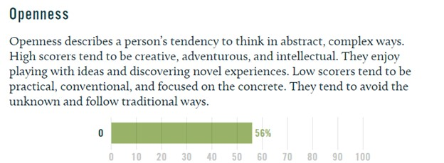
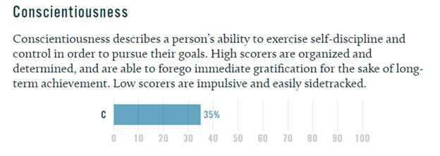
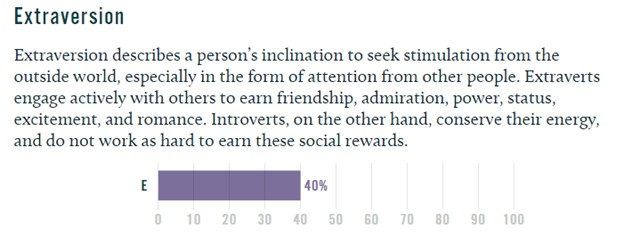
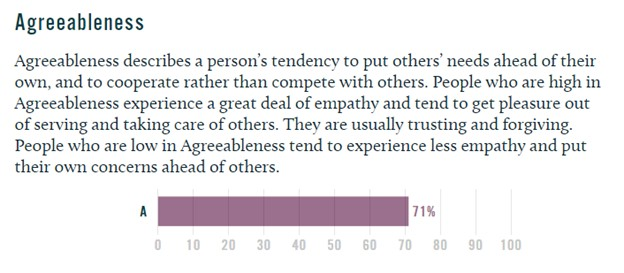
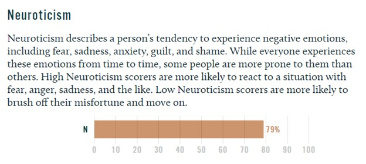

Results:
Personality: Defender
Role: Sentinel
Strategy: Constant Improvement
Results: Visual Learner
Results:
Openness:
Conscientiousness:
Extraversion:
Agreeableness:
Neuroticism:
These tests and outcomes were an eye-opening experience for me, I found out different traits and attributes that I was not aware of at first, but to come to think of it, were very accurate findings that reflect on my personality, traits, and attributes. However, these findings will not alter any of my feelings for myself, as only I, truly know my emotions, thinking process, and what is the correct path.
These results will not accurately display my behavior in a team, even if the Myers-Brigg Type Indicator Test results show I am more introverted and judging than others, I will put my utmost effort into trying to benefit the team with my communication, critical thinking, and skills. Nonetheless, I believe that I do have some very valuable attributes that I can efficiently contribute to a team. I will prioritize my best qualities to benefit my team and the project, so I can recognize others’ talents, help and encourage other members to reach their full potential, and create a high standard within a team.
When forming or finding a team, it would be more preferred If I try to find others who also have the same motivation and goal as I do, as well as have similar attributes and traits that relate to the different personality tests I have taken. I am open to exploring different options with other people with different personalities as they can help elevate a team to a higher level of efficiency and expectations, which is something that would not only benefit my part of working but also other members of the group as well.